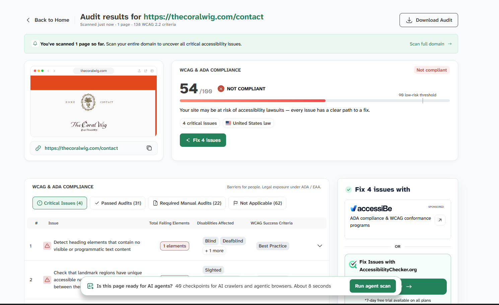

What is the URL of the website?
What is the name of the website?
The Coral Wig cocktail bar | Hotel Ulysses
Who is the site's target audience?
Patrons of the cocktail bar where I work, and people interested in learning more about the place for scheduling events, viewing the happy hour menu, or our hours.
How is the site organized?
At the top of the page in large text are two buttons leading to the home page and the contact page, each flanking the bar's logo. Beneath it is a heading reading "The Coral Wig" with the bar's location, Baltimore, in a subheading below. Beneath that under a divider are our hours, and beneath this is information about happy hour and Monday specials.
There is another divider beyond this which lists our address and the neighborhood where the bar is located, including how to find the bar because it's kind of hidden. At the bottom in the footer is an Instagram logo which leads to the bar's Instagram page.
On the contact page is our address and a link to the bar's email.
Which CRAP design principle does the site use?
The site implements the principle of Contrast because it uses a high-contrast white background with brown font, with distinguished and re-used (repetition principle) headers on both pages.
What is the audit score according to the Accessibility Checker?
54, meaning it's not ADA/WCAG-compliant.
What is the site's effectiveness?
The only actions on the site which can be completed are navigating to the home and contact pages. In this respect, the two huge menu buttons at the top allow for quick, accurate ways to visit both of the website's pages.
What is the site's efficiency?
Users can perform tasks quickly. The site lists all relevant information for patrons of the bar in a short format and easily-readable font in high-contrast with the background. The site is organized by related topics and contains little extraneous information, allowing users to quickly find everything they could need.
How is the engagement?
The site is very pleasant to use; the red border combined with the soft brown text and high-contrast white background provide a cohesive, visually-appealing color scheme that enables readability and easy navigability. It's appropriate for its industry because there is little other information one needs to know about a bar which isn't present on this website; hours, happy hour specials, contact information are all that's necessary for a bar's website.
Recommendation
I think it would've been helpful to identify the bar's location on a map or with directions, perhaps a photo of the entrance.